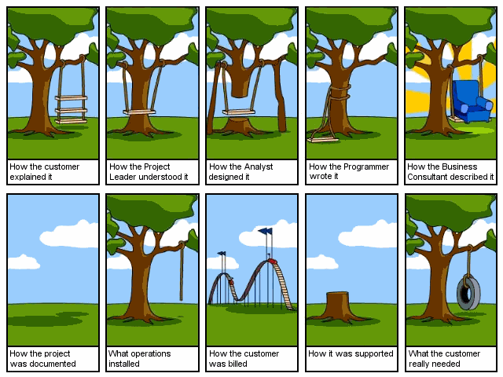

Classes at Tufts
Please contact me directly to view the code and documents for each assignment.
For this project, I simulated the operations of an order processing facility for a top online retailer, known as Nozama Online.
README
Spotlight Search
For this project, I implemented a program that indexes and searches a file tree for strings and then indexes each string. When a query is entered by a user, the program will print out all occurences of that query along with its path and line number.
README
For this project, I used JavaScript to annotate a music video with the lyrics of the song in the and provided some styling for the page via style.css.
Github Repository

Given an image named software.png and using only one HTML file named index.html and only one CSS file named responsive.css, I created a web page where if you resize the browser screen width, a different part of the image will be rendered. That is:
If the browser screen width is greater than 1200 pixels, display the top-left image of software.png (i.e., the one that reads "How the customer explained it")
If the browser screen width is greater than 1100 pixels but less than or equal to 1200 pixels, display the second image on the top row (i.e., "How the Project Leader understood it").
If the browser screen width is greater than 1000 pixels but less than or equal to 1100 pixels, display the third image on the top row (i.e., "How the Analyst designed it").
If the browser screen width is greater than 900 pixels but less than or equal to 1000 pixels, display the fourth image on the top row.
If the browser screen width is greater than 800 pixels but less than or equal to 900 pixels, display the last image on the top row.
If the browser screen width is greater than 700 pixels but less than or equal to 800 pixels, display the first image on the second row ("How the project was documented").
If the browser screen width is greater than 600 pixels but less than or equal to 700 pixels, display the second image on the second row.
If the browser screen width is greater than 500 pixels but less than or equal to 600 pixels, display the third image on the second row.
If the browser screen width is greater than 400 pixels but less than or equal to 500 pixels, display the fourth image on the second row.
If the browser screen width is less than or equal to 400 pixels, display the last image, bottom-right ("What the customer really needed").
Github Repository
Part 1
For this assignment, I created a page that displays a Google Map of all the MBTA Red Line subway stations.
These were the requirements for the assignment:
-The map shall take up the entire page.
-Each station on the map shall be a marker with an icon: use the same icon image for each marker. The Google Maps default red marker pin is not good enough.
-For now, the map shall be centered on South Station.
-Render a red polyline connecting each station, thus showing the complete Red Line on the map. Please note that the Red Line forks at JFK/UMass Station
Part 2
This part of the assignment implemented four new features:
-Determining your geolocation (geographic latitude and longitude) using the JavaScript navigator.geolocation object. Upon determining your geolocation, place a marker of where you are on the map. The icon of the marker must be different than icon used for each MBTA subway station (it can be the default red pin Google uses).
-Upon clicking on your marker on the map, display an information window noting the closest MBTA Red Line subway station from where you are including the distance away in miles.
-Render a polyline (any color) that connects "your" marker to the marker of the closest MBTA Red Line subway station.
-Upon clicking on a MBTA Red Line subway station marker, display an infowindow of the schedule of upcoming trains for that station. Use JSON API of Red Line trains that is provided.
Part 3
In this part, I recreated the server that served the real-time schedule JSON feed MBTA Red Line subway trains. The requirements were:
-The server shall be written in Node.js and using the Express web application framework. You are allowed to use Node packages.
-Work must be deployed onto Heroku.
-The server must have one route: GET /redline.json. Accessing this route shall return a JSON string, the contents of the original source of the JSON data feed http://developer.mbta.com/lib/rthr/red.json.
Cross-Origin Resource Sharing must be enabled for GET /redline.json.
Github Repository
For this assignment, I designed, built and tested two application programs and one supporting file input routine. The first program reports the average brightness of an image file. The second program reports similarities in file data, and uses an input routine called readaline that I implemented. That input routine needed to conform to an interface that was provided.
README
This assignment contained four components. The first component adapted the unboxed-array abstraction to support two-dimensional arrays. This two dimensional array was used in the second component, which determined the validity of a sudoku board. A portable graymap file that was passed in by a user would be copied into the two dimensional array, during which we would determine the validity of the sudoku board.
For the third component of the assignment, I implemented an interface that supported a two dimensional array of bits. This interface was then used to unblack edges of a portable graymap file. Thus, if a file had edge pixels that were black, the unblackedges program would change those edge pixels from black to white.
README
This assignment was all about the cache and locality. I implemented blocked two-dimensional arrays, which I used to evaluate the performance of image rotation utilizing three distinct array-access patterns with different locality properties. In this assignment, I also learned how to write code that is polymorphic in an array type.
README
In this assignment, my partner and I wrote a program that takes a PPM image and compresses the image by transforming color
spaces and discarding information not easily seen by the human eye (this is lossy compression). We
packed and unpacked binary data that puts multiple small values (both signed and unsigned) into a single larger
integer (often referred to as a word). We worked with two’s-complement representations of signed data.
README
The purpose of this assignment was to understand virtual-machine code (and by extension machine code)
by writing a software implementation of a simple virtual machine. My partner and I created a design with a clean modular structure.
We learned how the structural choices you make affect the performance of your programs.
We built an executable named "um". This Linux program takes a single argument which is the pathname
for a file. That file, typically with a name like some program.um, contains the machine instructions
that our emulator is to execute. When a UM program is stored in a file, words are stored using big-endian
byte order. Thus the high order four bits of the first byte of the file will be the first operation code for that
program. The um was implemented as a 32 bit machine using 64 bit Linux machines.
README